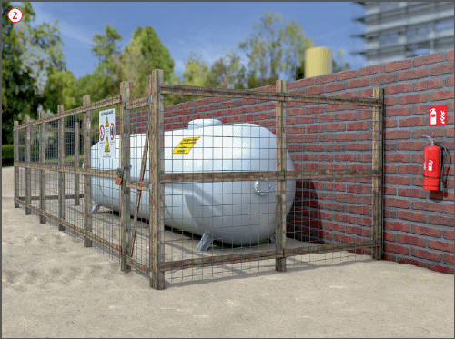
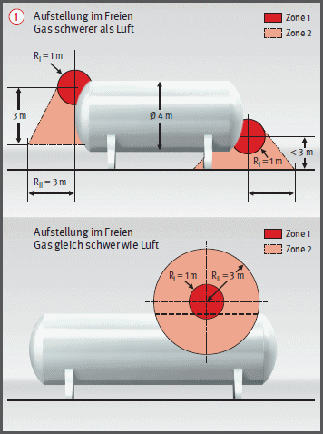

.
. .
.
Aufstellen von ortsfesten
|

..Explosionsgefährdete Bereiche bei oberirdisch im Freien aufgestellten Gaslagerbehältern

| Zone 1: | Bereich, in dem sich bei Normalbetrieb gelegentlich eine gefährliche, explosionsfähige Atmosphäre bilden kann. |
| Zone 2: | Bereich, in dem bei Normalbetrieb eine gefährliche, explosionsfähige Atmosphäre normalerweise nicht oder aber kurzzeitig auftritt, z. B. beim Befüllen oder Entleeren des Gaslagerbehälters. |
07/2021